The first open-world map with a village, a road and an ambush, a tank that talks back through a brass face, the first shopkeeper and walking townsfolk, a blunderbuss you hold in your hands, and loot spawners and tank stats made by students.
The week in numbers
Students is what students made or found; everything is all the work in the project, by students and teachers (and our AI tools).
| Students | Everything | |
|---|---|---|
| Bugs crushed | 1 (found by Bjørn) | 21 |
| New features | 3 | 30 |
| Changes | 1 | 9 |
| New assets | 11 models, plus the audio team's sounds | 29, plus the sounds |
| Students who helped this week | 5, plus the audio team | |
| Students who have helped, in total | 8, plus the audio team | |
Students this week: Mikkel, Tobias, Mathias, Bastian, Bjørn, and the audio team.
What we made
The first open world
- A real map, at last: Newbie Town, Levelup Road and Highlevel Hill, on Unreal's new mesh terrain. Hosting a game from the main menu now opens it, and it is included when we make a build.
- The Terrain Stamp Maker, our own tool in the editor: pick mountains, a ridge, a mesa, a butte, a canyon or a dune field, move the sliders, and save it to a library of desert stamps for sculpting the land.
- A torn road with old telegraph poles, some standing, some broken or fallen. They tell a story and lead the eye.
- Map markers in the editor: tall arrows with names, so you can find places on a big map.
Combat on the road
- Ambushes: when your tank drives into an ambush area, the enemy tanks waiting there appear and attack.
- Loadouts and loot lists: a spawned tank carries what we give it, from a list with chances. Its turrets only fire shells it actually carries, so we can make a wounded tank limping home with no ammo, or a tank stuffed with loot.
- Real holes in real fights: the hole-cutting armour now works on the tanks themselves. In the first ambush test our big tank was shot to pieces, hole by hole.
- Explosive barrels: more than 10 damage in one hit and they blow up, set off the barrels next to them, and fly into the air. Mathias modelled the barrel, intact and in seven damaged versions.
- Bastian's exploding cannonball, and explosion effects that look right at any size.
A tank you can talk to
- The brass officer: a giant face on the wall with eyes that follow you, a moving jaw, a cigar and red light in its eyes and mouth. It has moods (anger, fear, pride, sadness) that change its face.
- It talks back. Press E at the face and type, or hold a key and speak. It answers in character, through the Player2 AI, with a deep metal voice that sounds like it comes from inside the hull. Everyone on the tank hears the answer.
- Personality shards: punch cards with a crystal, each a fragment of someone's memory with a personality (Grump, Soldier, Diva, Coward...). Slot them into the rack next to the face and they become the tank's mind. Pull one out and the tank loses that part of itself. The idea, with new concept art.
- Stand too close and he snaps at you.
People
- Our first civilian walks around, looks at the mountains, and sits on a bench when he gets tired.
- An NPC system: drag a person into a level. Named people (like Otto Kettleby, who runs the general store in Newbie Town) are saved as their own file, with a name, a role, a story, a personality, a look and a shop. Background people get a random name. One button turns a person you made in a level into a named person.
- The first shopkeeper: Otto sells everything from bandages to a blunderbuss, and the shop works.
- People who walk: the same NPCs can walk around and sit on benches.
In your hands
- A hotbar: ten slots at the bottom of the screen. Drag items from the inventory, press 1–0 or use the mouse wheel to hold one.
- Grips: every item that can be held picks a grip: default, pistol, rifle or heavy. Our own character now holds things properly, also while climbing.
- Encumbrance: heavy things in your hands make you slower and climb lower.
- The blunderbuss (Heckler & Brass Model 4 “Bellmouth”, 50 mm): one shot, ten seconds to reload. Hand weapons use the same parts as the turrets, so they work and look the same. Every item now has a maker, with a home town.
- The crew headset: a monocle, an earpiece, a microphone and a head lamp that gets tighter and brighter when you aim. Crews light their own way instead of us putting lamps in every room. The idea.
Made by students
- Loot spawners (Mikkel, with Claude): crates and piles that fill with items and refill a while after they are looted.
- Tank stats (Mikkel, with Claude): hull, power, coolant, fuel and sanity, with events so parts of the tank can react when a stat gets low or runs out.
- Mechanical parts (gears, a shaft and a spring) by Tobias and Mathias, now in the game with an icon, and their scrap metal on the ground.
- The audio team recorded dirt footsteps, and the crash of a tank running over trees and cacti.
Multiplayer
- Loot, broken pieces, crushed plants and exploding barrels now look the same for every player.
- Plants scattered by Unreal's PCG come out the same on every computer: checked with two players, 297 plants each, in the same places.
Bugs crushed
- On a small screen the build menu's piece list ran off the bottom. It scrolls now.
- In multiplayer, loot spawners made every item twice, and the copies could not be picked up. Found by Bjørn in our multiplayer test.
- Broken tank pieces stayed visible for joined players.
- Trees and cacti only broke on the host's screen.
- Footstep test text was left on the screen.
- The tank spawner left half of its preview standing in the level.
- Spawned tanks were stopped by the smallest cactus (they had no crusher).
- The big tank got stuck on its belly on bumpy ground, and had too little engine power for its weight.
- Telegraph poles vanished in Play, or hung in the air.
- Light leaked out along the officer's wall, and his plaque showed his name twice.
- The officer's “too close” lines didn't fire; his text box was unreadable; a slotted shard still showed in the list.
- Held items pointed back up the arm, and the left hand dangled off the heavy gun.
- Clicking while the blunderbuss reloaded started a turret motor sound that never stopped.
- Hosting opened the old test level instead of the open world, and then the ground was missing (the terrain was not baked).
- A person given the civilian AI zoomed around without walking, and never sat down.
Still open: in multiplayer, a player who left the enemy tank fell through the ground (found by Bjørn); a crash in multiplayer (Bjørn sent the log); build mode needs a way to hover and pass through walls.
Bjørn won this week: he found bugs faster than we fixed them. None of them break anything big for now, so we spent the week bringing all the parts together into a map we can play on together. His bugs are next.
What we found
- Big tanks need more than a bigger engine. Every tank stood on the same eight springs, whatever its size, so a long tank had nothing holding up its front and back. Now each track housing brings its own springs.
- When you host a game or make a build, only the baked terrain is there. Bake the terrain before you test.
- Unreal's PCG gives every computer the same plants, as long as the graph, the seed and the inputs are the same.
- The audio team's dirt footsteps sound a lot like the old ones, and that's fine: they are made by students, for this game. Surfaces with no sounds of their own (like sand) are the next job.
- Most school computers have no microphone, so talking to the tank always needs a text box too.
Decisions
- Armour gets real holes (students and teachers picked it).
- Every named person is their own file, so students never edit the same file at the same time.
- Crews carry their own light (the headset lamp) instead of lamps in every room of the tank.
- Our editor tools are written in C++, so they work on every school computer without extra installs.
Votes
Closed: we stay on this Discord server, and the fake-physics tank won over the simulated one. That was where we were heading anyway: the fake tank is the one we have been building on. Still open: how serious the game should be (1–10), and what kind of map, which leans towards the mix: hand-built towns with generated land between them. Decisions.
For students
- Code commissions: a new Discord forum with short, fixed coding tasks. Two are done (Mikkel's loot spawner and tank stats). Ten new ones for multiplayer, from 15 minutes to 3 hours: doors for everyone, the welding torch online, name tags, text chat, a crew list, joining at your tank, player health and respawn, when the host leaves, a network info box and a ping marker. And bigger ones: faction flags, and levers and mini-games that change the tank's stats.
- Audio: a new commission for the blunderbuss: click, boom, bonk, and a ten-second reload in six steps.
- 3D: the barrel and the mechanical parts are done; crates, counters, armour plates, coins and more are still open.
New ideas
Talking to your tank (now partly built) · The crew headset (partly built)
Pictures

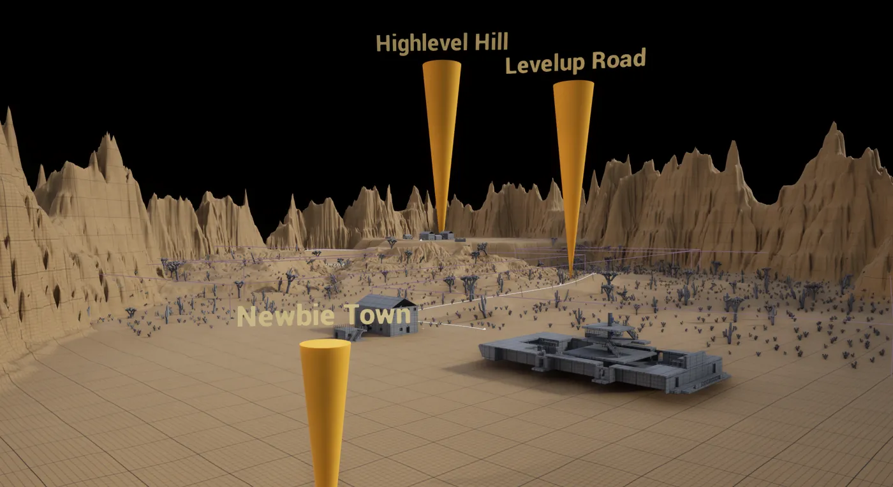

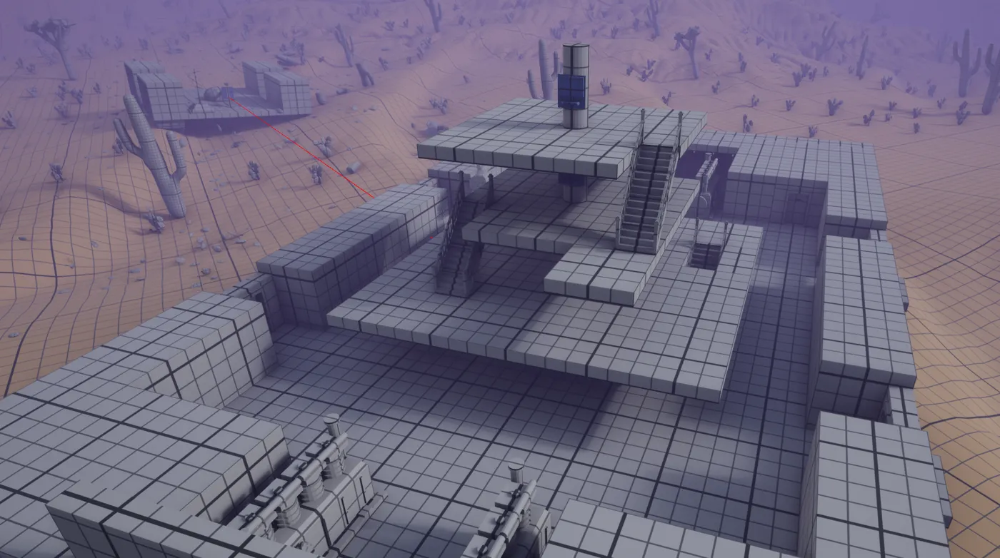

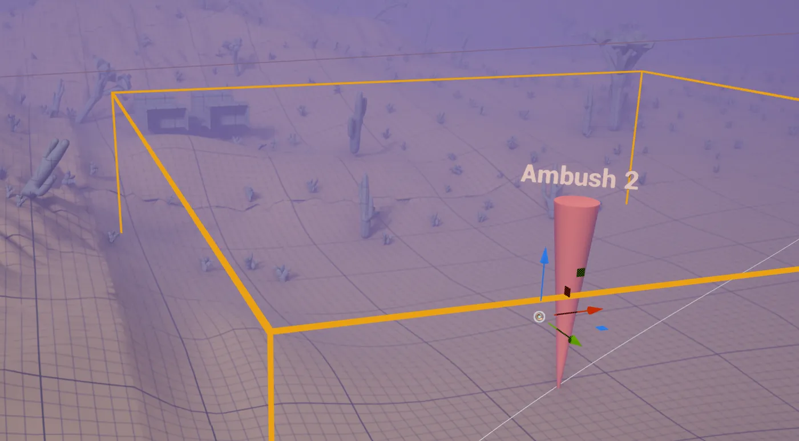

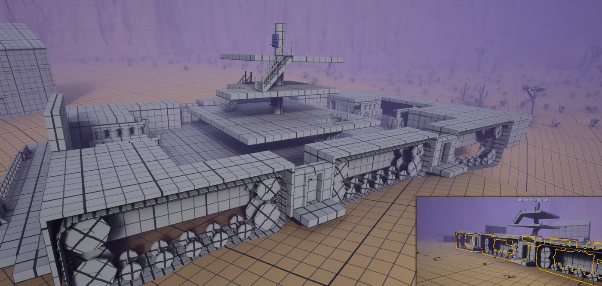

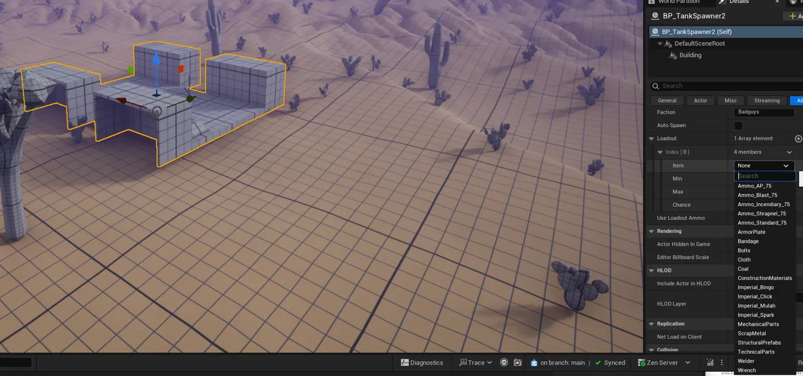

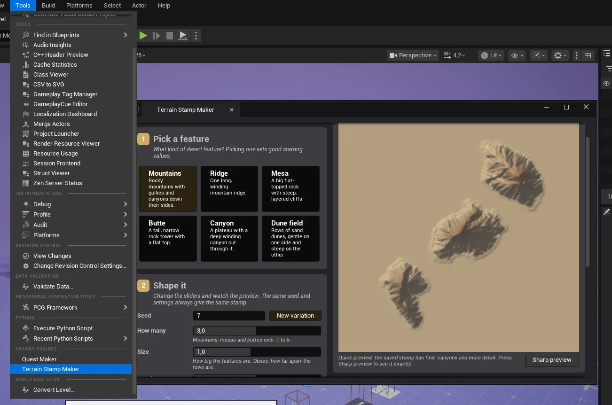

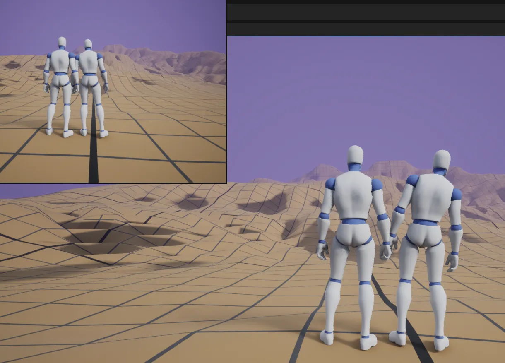

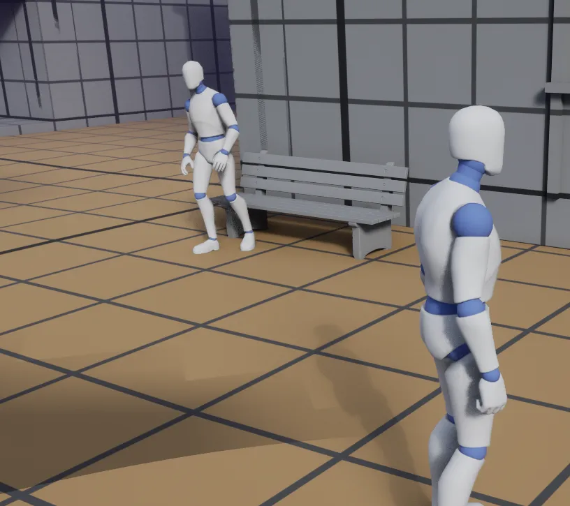

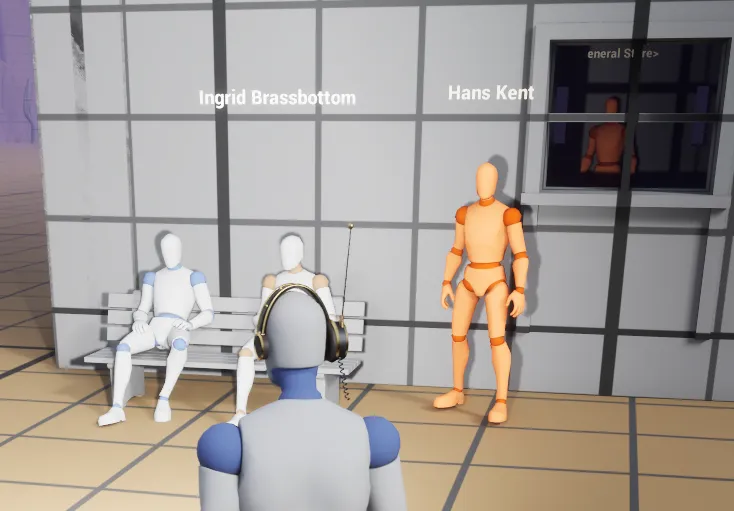

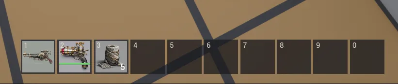

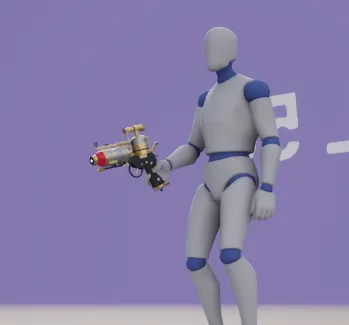

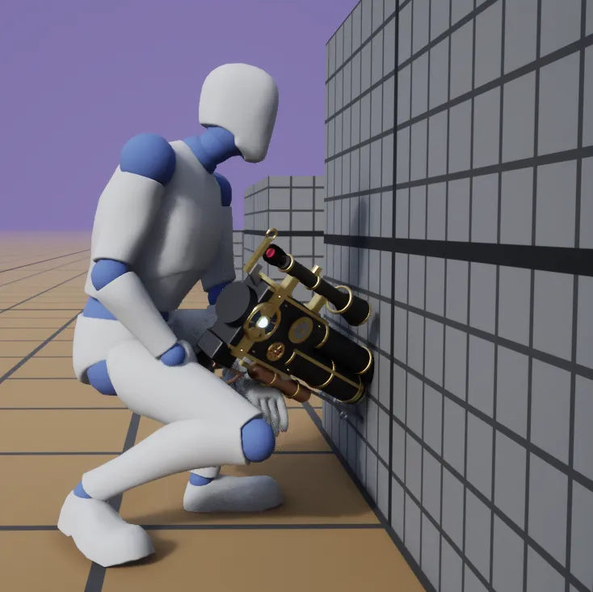

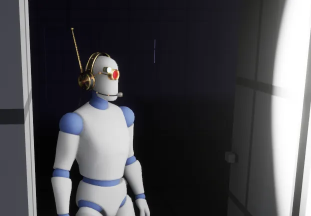

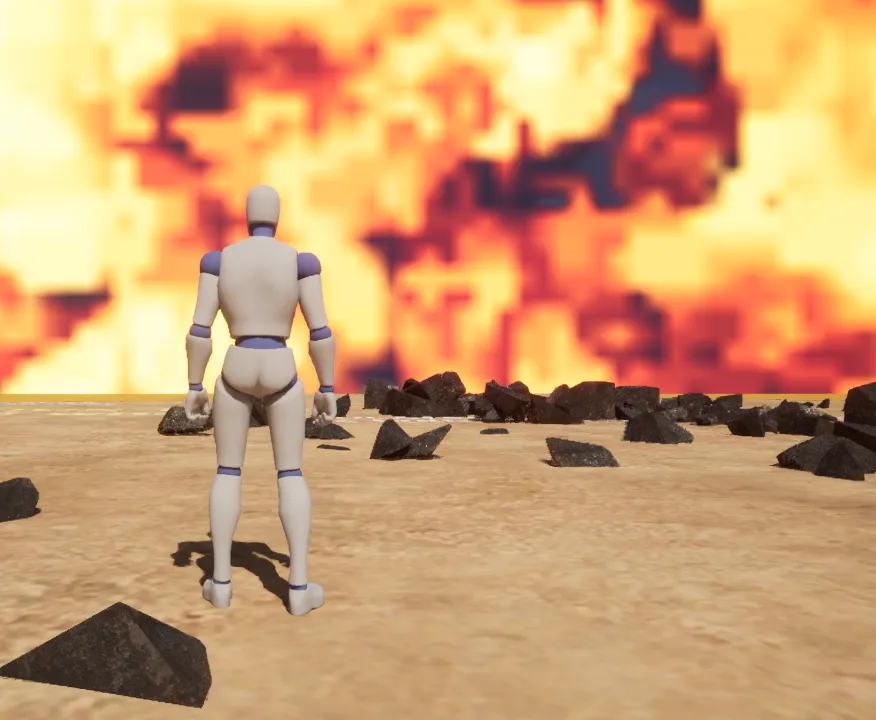